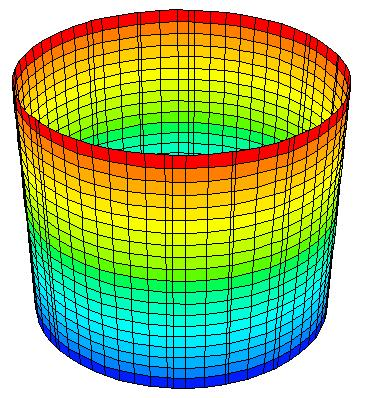

Barb and Don discuss her work with children at Andrew's school
March 6, 2003 Barb is a very bright woman. They were really together on how children learn. They discussed the following:
She'll work with about 6 youngsters, including her son Andrew, twice a week.
When to start using DP Graph (which Andrew fell in love with while in Champaign)-- They should first do lots of graphs (see ch.6 ) with pencil and paper, on the 1/2" graph paper. Graphs are very important and they should understand clearly what it means to graph an equation like 2x + 3 = y (get pairs of numbers for x and y that make the statement TRUE, like (4,11), given in (x,y) form as done by Descartes.). And they talked about x^2 + y^2 = 9 is a circle in 2D, but a cylinder in 3D as shown in DPGraph:

Making little notebooks for the children.
Doing number names for today's date.
Starting with solving quadratic equations like x2 - 5x + 6 = 0, by GUESSING, after making sure they know 1-2 = -1 and 52 = 5x5=25. This will get them started on a hard problem, but something they can do and see a pattern, and be able to show their parents they are doing some good mathematics. They discussed what teachers are doing to solve equations by using "funelling" and "showing all steps", which really discourages children and makes them think about the method, rather than ways to solve the equation.
Barb was relaying a teacher's concern that they know how to do long division.They discussed how Don begins division with cookie-sharing and looking for patterns.